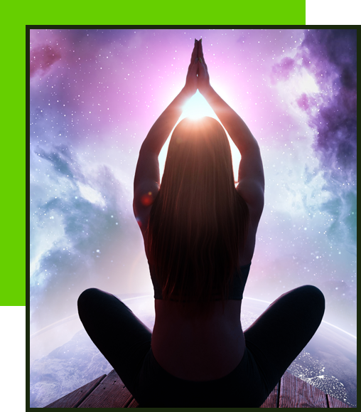

My journey into Occult Sciences began not as a career choice, but as a profound inner calling. What started as a personal exploration of self-awareness gradually evolved into a lifelong commitment to spiritual learning and disciplined practice.
Over the years, through continuous study, meditation, hands-on practice, and guidance from experienced masters, I developed deep expertise in Astrology, Numerology, Reiki, and LamaFera Healing. Today, this journey has transformed into a clear mission:
to help individuals overcome life’s challenges through authentic, ethical, and practical spiritual sciences.
I bring many years of dedicated professional experience in the field of occult sciences. During this time, I have worked with individuals from diverse backgrounds, professions, and countries across the globe.
My approach is not theoretical or generic. It is based on:
Every consultation adds depth to my understanding and reinforces my commitment to meaningful, result-oriented guidance.
Thousands of paid consultations delivered worldwide
Hundreds of students trained through structured online and offline programs
Many students now successfully practicing Astrology, Numerology, and Reiki professionally
Each client and student is an essential part of my journey. Their experiences continually reinforce my belief that true guidance must be ethical, practical, and compassionate.
My work is guided by a clear and uncompromising philosophy:
“Occult sciences are meant to create awareness and empowerment — never fear.”
I strictly follow these principles:
I strongly believe that karma, free will, and awareness work together. My role is not to control destiny, but to help individuals understand their path and make informed, conscious choices.
Learning in occult sciences is a continuous process. I remain committed to refining my knowledge and skills as deeper understanding emerges through experience and practice.
I actively conduct and participate in:
All programs are designed with a strong focus on practical application, ensuring that participants gain usable skills rather than theoretical knowledge alone.
I also share free knowledge and awareness through my YouTube channel:
📺 Astro By Rajesshwaar
https://youtube.com/@astrobyrajesshwaar?si=DSefm-REnHdccoP1
The channel covers:
This platform allows me to reach and support a wider audience beyond one-to-one consultations.

My purpose is not to predict fear or dependency.
My purpose is to bring clarity, balance, and direction into life through authentic occult sciences.
If you are genuinely seeking guidance, healing, or structured learning, you are most welcome.
🔮 Book a Paid Consultation 🎓 Join Certified Courses